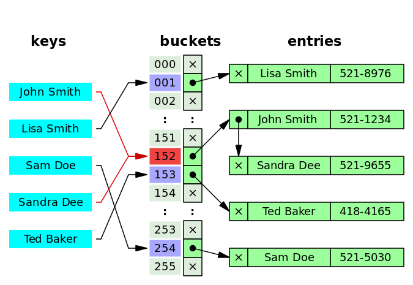

数组和哈希表的学习和python实现
数组(Array)
数组数据结构(array data structure)，简称数组(Array)，是由相同类型的元素(element)的集合所组成的数据结构，分配一块连续的内存来存储。利用元素的索引(index)可以计算出该元素对应的存储地址。
数组是最早期和最重要的数据结构之一，很多程序都会用到数组。它们也用于实现许多其他数据结构，譬如列表(list)和字符串(string)。它们有成效地开展了计算机的定址逻辑。在大多数现代计算机和许多外部存储设备中，存储器如同一维数组，索引就是其地址。编译器、处理单元（特别是向量处理器），经常会针对数组操作进行优化。
复杂度分析
Python中 list 数据结构的复杂度。
| 操作 | 操作说明 | 时间复杂度 |
|---|---|---|
| index(value) | 查找list某个元素的索引 | O(1) |
| a = index(value) | 索引赋值 | O(1) |
| append(value) | 队尾添加 | O(1) |
| pop() | 队尾删除 | O(1) |
| pop(index) | 根据索引删除某个元素 | O(n) |
| insert(index, value) | 根据索引插入某个元素 | O(n) |
| iterration | 列表迭代 | O(n) |
| search(in) | 列表搜索（其实就是in关键字） | O(n) |
| slice [x:y] | 切片, 获取x, y为O(1), 获取x,y 中间的值为O(k) | O(k) |
| del slice [x:y] | 删除切片，删除切片后数据需要重新移动/合并 | O(n) |
| reverse | 列表反转 | O(n) |
| sort | 排序 | O(nlogn) |
哈希表(Hash table)
散列表（Hash table，也叫哈希表），是根据键(Key)而直接访问在内存存储位置的数据结构。也就是说，它通过计算一个关于键值的函数，将所需查询的数据映射到表中一个位置来访问记录，这加快了查找速度。这个映射函数称做散列函数，存放记录的数组称做散列表。
哈希函数
散列函数能使对一个数据序列的访问过程更加迅速有效，通过散列函数，数据元素将被更快定位。
- 直接定址法：取关键字或关键字的某个线性函数值为散列地址。
- 数字分析法：假设关键字是以r为基的数，并且哈希表中可能出现的关键字都是事先知道的，则可取关键字的若干数位组成哈希地址。
- 平方取中法：取关键字平方后的中间几位为哈希地址。通常在选定哈希函数时不一定能知道关键字的全部情况，取其中的哪几位也不一定合适，而一个数平方后的中间几位数和数的每一位都相关，由此使随机分布的关键字得到的哈希地址也是随机的。取的位数由表长决定。
- 折叠法：将关键字分割成位数相同的几部分（最后一部分的位数可以不同），然后取这几部分的叠加和（舍去进位）作为哈希地址。
- 随机数法
- 除留余数法：取关键字被某个不大于散列表表长m的数p除后所得的余数为散列地址。不仅可以对关键字直接取模，也可在折叠法、平方取中法等运算之后取模。对p的选择很重要，一般取素数或m，若p选择不好，容易产生冲突。
1. 正整数
获取正整数哈希值最常用的方法是使用除留余数法。即对于大小为素数M的数组，对于任意正整数k，计算k除以M的余数。M一般取素数。
2. 字符串
将字符串作为键的时候，我们也可以将他作为一个大的整数，采用保留除余法。我们可以将组成字符串的每一个字符取值然后进行哈希，比如
def getHashCode(str):
hash = 0
for char in str:
hash = int(char) + (31 * hash)
return hash上面的哈希值是Horner计算字符串哈希值的方法，公式为:
举个例子，比如要获取”call”的哈希值，字符串c对应的unicode为99，a对应的unicode为97，L对应的unicode为108，所以字符串”call”的哈希值为 3045982 = 99·31^3 + 97·31^2 + 108·31^1 + 108·31^0 = 108 + 31· (108 + 31 · (97 + 31 · (99)))。
print(getHashCode("call"))
'''
输出： 3045982
'''如果对每个字符去哈希值可能会比较耗时，所以可以通过间隔取N个字符来获取哈西值来节省时间，比如，可以 获取每8-9个字符来获取哈希值。但是，对于某些情况，不同的字符串会产生相同的哈希值，这就是前面说到的哈希冲突（Hash Collisions），比如下面的四个字符串：
如果我们按照每8个字符取哈希的话，就会得到一样的哈希值。
哈希冲撞
如果将2450个密钥散列到一百万个存储桶中，即使具有完全均匀的随机分布，则根据生日问题，至少有两个密钥散列到同一存储桶的机率大约为95％。…
res=1
n=1000000
for i in range(2450):
res*=(n-1)/n
print(res)
'''
0.9975529975784029
'''1. Separate chaining
每一个bucket指向一个数组、链表或其他数据结构。

2. Open addressing
每一个bucket存放一个entry record,添加时如果已占用就下移一格，查找同理。
复杂度分析
Python中 dict 数据结构的复杂度
| 操作 | 操作说明 | 时间复杂度 |
|---|---|---|
| copy | 复制 | O(n) |
| get(value) | 获取 | O(1) |
| set(value) | 修改 | O(1) |
| delete(value) | 删除 | O(1) |
| search(in) | 字典搜索 | O(1) |
| iterration | 字典迭代 | O(n) |
例题
1. 力扣（leetcode）204. 计数质数
统计所有小于非负整数 n 的质数的数量。
class Solution:
def countPrimes(self, n: int) -> int:
isPrime = [1] * n
for i in range(2, int(n ** 0.5) + 1):
if isPrime[i]:
for j in range(i * i, n, i):
isPrime[j] = 0
counts = 0
for i in range(2,len(isPrime)):
if isPrime[i] : counts += 1
return counts2. 力扣（leetcode）355. 设计推特
设计一个简化版的推特(Twitter)，可以让用户实现发送推文，关注/取消关注其他用户，能够看见关注人（包括自己）的最近十条推文。你的设计需要支持以下的几个功能：
postTweet(userId, tweetId): 创建一条新的推文
getNewsFeed(userId): 检索最近的十条推文。每个推文都必须是由此用户关注的人或者是用户自己发出的。推文必须按照时间顺序由最近的开始排序。
follow(followerId, followeeId): 关注一个用户
unfollow(followerId, followeeId): 取消关注一个用户
from collections import defaultdict
class Twitter:
def __init__(self):
"""
Initialize your data structure here.
"""
self.timeline = defaultdict(list)
self.userId_follower = defaultdict(set)
self.now = 1
class post:
def __init__(self, tweetId, time):
self.id = tweetId
self.time = time
self.next = None
def postTweet(self, userId: int, tweetId: int) -> None:
"""
Compose a new tweet.
"""
po = self.post(tweetId, self.now)
if len(self.timeline[userId]) > 0:
po.next = self.timeline[userId][-1]
self.timeline[userId].append(po)
self.now += 1
def getNewsFeed(self, userId):
"""
Retrieve the 10 most recent tweet ids in the user's news feed. Each item in the news feed must be posted by users who the user followed or by the user herself. Tweets must be ordered from most recent to least recent.
"""
res = []
queue = []
for uid in self.userId_follower[userId] | {userId}:
if len(self.timeline[uid]) > 0:
queue.append(self.timeline[uid][-1])
if not queue: return []
for _ in range(10):
maxIndex = 0
maxId = 0
f = 0
for i in range(len(queue)):
if queue[i] and (queue[i].time > maxId):
maxId=queue[i].time
maxIndex = i
f = 1
if f == 0 and not queue[0]: break
res.append(queue[maxIndex].id)
queue[maxIndex]=queue[maxIndex].next
return res
def follow(self, followerId: int, followeeId: int) -> None:
"""
Follower follows a followee. If the operation is invalid, it should be a no-op.
"""
self.userId_follower[followerId].add(followeeId)
def unfollow(self, followerId: int, followeeId: int) -> None:
"""
Follower unfollows a followee. If the operation is invalid, it should be a no-op.
"""
self.userId_follower[followerId].discard(followeeId)采用了优先队列的思路